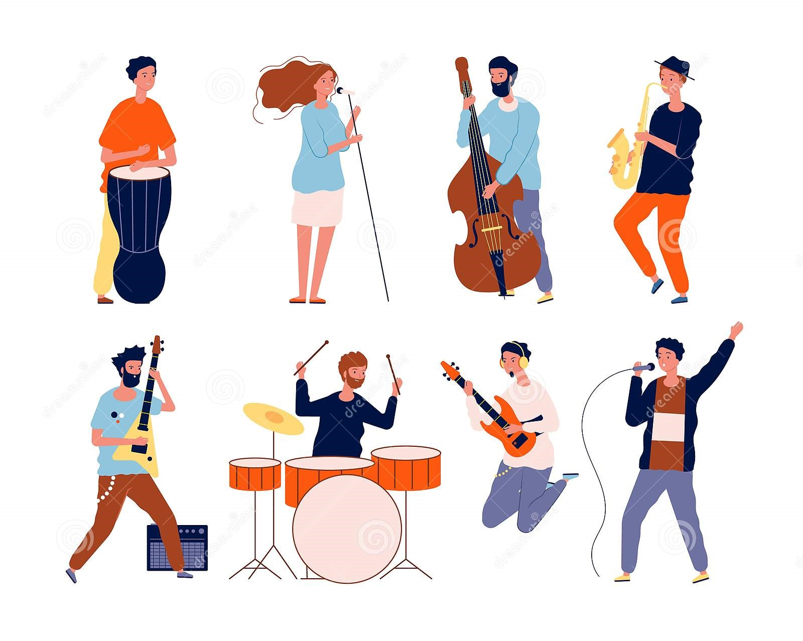

Na parte de compra e venda de serviços, a nossa aplicação deverá ter uma plataforma
online onde os clientes possam requisitar serviços aos grupos musicais, estes serviços
podem variar entre contratar uma banda inteira para um serviço, contratar um grupo de
musicos (quartetos, ensembles, entre outros) ou até mesmo no caso de uma banda tiver
musicos em falta, esta pode requestar musicos a outras bandas. Consequentemente, a
plataforma também teria uma zona para as bandas aceitarem ou não estes serviços.